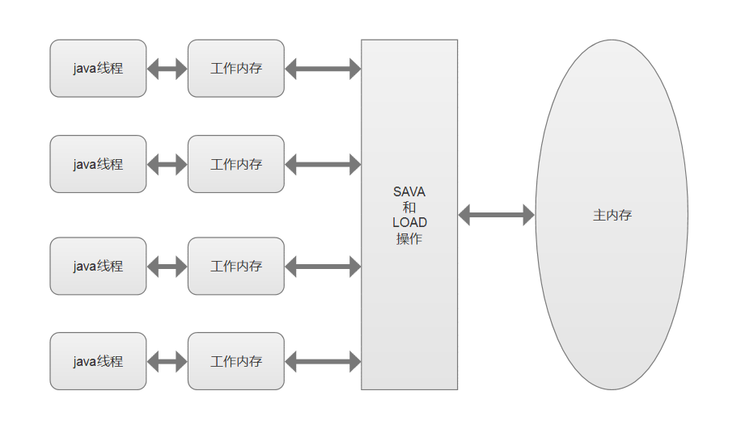

Java并发编程（三） 共享模型之内存 1. Java 内存模型 在Java SE 5 (JSR133)中定义的JMM（Java Memory Model）是为了确保当编写并发代码的时候能够提供Java定义和语义，使多线程程序不仅正确，而且性能高，对现有代码库的影响最小。
JMM 即 Java Memory Model，它定义了主内存、工作内存抽象概念，底层对应着 CPU 寄存器、缓存、硬件内存、 CPU 指令优化等。
JMM 体现在以下几个方面
原子性 - 保证指令不会受到线程上下文切换的影响 可见性 - 保证指令不会受 cpu 缓存的影响 有序性 - 保证指令不会受 cpu 指令并行优化的影响。
JMM规定了：
所有变量都存储在主内存中。
每个线程有自己的工作内存（保存了使用的变量的主内存的副本），所有操作都必须在工作内存中进行。
那么不同的线程之间如果需要共享变量的值，就都需要通过主内存来完成。

2. 可见性 退不出的循环
代码示例
1 2 3 4 5 6 7 8 9 10 11 12 13 14 15 16 17 18 19 20 21 22 package com.java.demo.jmm;import lombok.extern.slf4j.Slf4j;import java.util.concurrent.TimeUnit;@Slf 4j(topic = "c.LoopTest" )public class LoopTest static boolean run = true ; public static void main (String[] args) throws InterruptedException new Thread(()->{ while (run){ } },"t1" ).start(); TimeUnit.SECONDS.sleep(5 ); log.debug("停止t1线程..." ); run = false ; } }
分析 为什么main线程将run设置为false，但是t线程依旧不会停止?
初始状态， t 线程刚开始从主内存读取了 run 的值到工作内存。
因为 t 线程要频繁从主内存中读取 run 的值，JIT 编译器会将 run 的值缓存至自己工作内存中的高速缓存中， 减少对主存中 run 的访问，提高效率。
1 秒之后，main 线程修改了 run 的值，并同步至主存，而 t 是从自己工作内存中的高速缓存中读取这个变量 的值，结果永远是旧值
解决方案
1 2 3 4 5 6 7 8 9 10 11 12 13 14 15 16 17 18 19 20 21 22 23 package com.java.demo.jmm;import lombok.extern.slf4j.Slf4j;import java.util.concurrent.TimeUnit;@Slf 4j(topic = "c.LoopSolutionVolatile" )public class LoopSolutionVolatile volatile static boolean run = true ; public static void main (String[] args) throws InterruptedException new Thread(()->{ while (run){ } },"t1" ).start(); TimeUnit.SECONDS.sleep(1 ); log.debug("停止t1线程..." ); run = false ; } }
1 2 3 4 5 6 7 8 9 10 11 12 13 14 15 16 17 18 19 20 21 22 23 24 25 26 27 28 29 30 31 32 33 34 package com.java.demo.jmm;import lombok.extern.slf4j.Slf4j;import java.util.concurrent.TimeUnit;@Slf 4j(topic = "c.LoopSolutionsynchronized" )public class LoopSolutionsynchronized static boolean run = false ; final static Object lock = new Object(); public static void main (String[] args) throws InterruptedException new Thread(()->{ while (true ){ synchronized (lock){ if (!run){ break ; } } } }).start(); TimeUnit.SECONDS.sleep(1 ); log.debug("停止t1线程..." ); synchronized (lock){ run = false ; } } }
可见性 vs 原子性 前面例子体现的实际就是可见性，它保证的是在多个线程之间，一个线程对 volatile 变量的修改对另一个线程可见， 不能保证原子性，仅用在一个写线程，多个读线程的情况： 上例从字节码理解是这样的：
1 2 3 4 5 6 getstatic run // 线程 t 获取 run true getstatic run // 线程 t 获取 run true getstatic run // 线程 t 获取 run true getstatic run // 线程 t 获取 run true putstatic run // 线程 main 修改 run 为 false， 仅此一次 getstatic run // 线程 t 获取 run false
比较一下之前我们将线程安全时举的例子：两个线程一个 i++ 一个 i– ，只能保证看到最新值，不能解决指令交错
1 2 3 4 5 6 7 8 9 // 假设i的初始值为0 getstatic i // 线程2-获取静态变量i的值 线程内i=0 getstatic i // 线程1-获取静态变量i的值 线程内i=0 iconst_1 // 线程1-准备常量1 iadd // 线程1-自增 线程内i=1 putstatic i // 线程1-将修改后的值存入静态变量i 静态变量i=1 iconst_1 // 线程2-准备常量1 isub // 线程2-自减 线程内i=-1 putstatic i // 线程2-将修改后的值存入静态变量i 静态变量i=-1
❗注意 synchronized 语句块既可以保证代码块的原子性，也同时保证代码块内变量的可见性。但缺点是 synchronized 是属于重量级操作，性能相对更低 。
❓ 如果在前面示例的死循环中加入 System.out.println("running...");会发现即使不加 volatile 修饰符，线程 t 也能正确看到 对 run 变量的修改了，想一想为什么？
看了其源码就会发现，其方法加了synchronized
1 2 3 4 5 6 7 > public void println (String x) > synchronized (this ) { > print(x); > newLine(); > } > } >
同步模式 之 两阶段终止模式 利用 isInterrupted
代码示例
1 2 3 4 5 6 7 8 9 10 11 12 13 14 15 16 17 18 19 20 21 22 23 24 25 26 27 28 29 30 31 32 33 34 35 36 37 38 39 40 41 42 43 44 45 46 47 48 49 50 51 52 53 54 55 56 57 58 package com.java.demo.pattern.termination;import lombok.extern.slf4j.Slf4j;import java.util.concurrent.TimeUnit;@Slf 4j(topic = "c.TwoPhaseTerminationTest" )public class TwoPhaseTerminationTest public static void main (String[] args) throws InterruptedException TwoPhaseTermination twoPhaseTermination = new TwoPhaseTermination(); twoPhaseTermination.start(); TimeUnit.SECONDS.sleep(4 ); twoPhaseTermination.stop(); } } @Slf 4j(topic = "c.TwoPhaseTermination" )class TwoPhaseTermination private Thread monitor; public void start () monitor = new Thread(()->{ while (true ){ Thread currentThread = Thread.currentThread(); if (currentThread.isInterrupted()){ log.debug("料理后事..." ); break ; } try { TimeUnit.SECONDS.sleep(1 ); log.debug("执行监控记录..." ); } catch (InterruptedException e) { e.printStackTrace(); currentThread.interrupt(); } } }, "monitor" ); monitor.start(); } public void stop () monitor.interrupt(); } }
执行结果
1 2 3 4 5 6 7 8 9 10 14:41:40 [monitor] c.TwoPhaseTermination - 执行监控记录... 14:41:41 [monitor] c.TwoPhaseTermination - 执行监控记录... 14:41:42 [monitor] c.TwoPhaseTermination - 执行监控记录... java.lang.InterruptedException: sleep interrupted at java.lang.Thread.sleep(Native Method) at java.lang.Thread.sleep(Thread.java:340) at java.util.concurrent.TimeUnit.sleep(TimeUnit.java:386) at com.java.demo.pattern.termination.TwoPhaseTermination.lambda$start$0(TwoPhaseTerminationTest.java:40) at java.lang.Thread.run(Thread.java:748) 14:41:43 [monitor] c.TwoPhaseTermination - 料理后事...
利用停止标记 1 2 3 4 5 6 7 8 9 10 11 12 13 14 15 16 17 18 19 20 21 22 23 24 25 26 27 28 29 30 31 32 33 34 35 36 37 38 39 40 41 42 43 44 45 46 47 48 49 50 51 52 53 54 package com.java.demo.pattern.termination;import lombok.extern.slf4j.Slf4j;import java.util.concurrent.TimeUnit;@Slf 4j(topic = "c.TwoPhaseTerminationVolatileTest" )public class TwoPhaseTerminationVolatileTest public static void main (String[] args) throws InterruptedException TwoPhaseTerminationVolatile twoPhaseTerminationVolatile = new TwoPhaseTerminationVolatile(); twoPhaseTerminationVolatile.start(); TimeUnit.SECONDS.sleep(4 ); log.debug("停止监控" ); twoPhaseTerminationVolatile.stop(); } } @Slf 4j(topic = "c.TwoPhaseTerminationVolatile" )class TwoPhaseTerminationVolatile private Thread monitor; private volatile boolean stop; public void start () monitor = new Thread(()->{ while (true ){ if (stop){ log.debug("料理后事..." ); break ; } try { TimeUnit.SECONDS.sleep(1 ); log.debug("执行监控记录..." ); } catch (InterruptedException e) { e.printStackTrace(); } } }, "monitor" ); monitor.start(); } public void stop () stop = true ; monitor.interrupt(); } }
执行结果
1 2 3 4 5 6 7 8 9 10 11 16:45:14 [monitor] c.TwoPhaseTerminationVolatile - 执行监控记录... 16:45:15 [monitor] c.TwoPhaseTerminationVolatile - 执行监控记录... 16:45:16 [monitor] c.TwoPhaseTerminationVolatile - 执行监控记录... 16:45:17 [main] c.TwoPhaseTerminationVolatileTest - 停止监控 16:45:17 [monitor] c.TwoPhaseTerminationVolatile - 料理后事... java.lang.InterruptedException: sleep interrupted at java.lang.Thread.sleep(Native Method) at java.lang.Thread.sleep(Thread.java:340) at java.util.concurrent.TimeUnit.sleep(TimeUnit.java:386) at com.java.demo.pattern.termination.TwoPhaseTerminationVolatile.lambda$start$0(TwoPhaseTerminationVolatileTest.java:38) at java.lang.Thread.run(Thread.java:748)
同步模式 之 Balking 定义 Balking （犹豫）模式用在一个线程发现另一个线程或本线程已经做了某一件相同的事，那么本线程就无需再做 了，直接结束返回。
实现 1 2 3 4 5 6 7 8 9 10 11 12 13 14 15 16 17 18 19 20 21 22 23 24 25 26 27 28 29 30 31 32 33 34 35 36 37 38 39 40 41 42 43 44 45 46 47 48 49 50 51 52 53 54 55 56 57 58 59 60 61 package com.java.demo.pattern.synchronous.balking;import lombok.extern.slf4j.Slf4j;import java.util.concurrent.TimeUnit;@Slf 4j(topic = "c.BalkingTest" )public class BalkingTest public static void main (String[] args) TwoPhaseTermination twoPhaseTermination = new TwoPhaseTermination(); twoPhaseTermination.start(); twoPhaseTermination.start(); } } @Slf 4j(topic = "c.TwoPhaseTermination" )class TwoPhaseTermination private Thread monitor; private boolean startFlag; public void start () synchronized (this ){ if (startFlag){ return ; } startFlag = true ; } monitor = new Thread(()->{ while (true ){ Thread currentThread = Thread.currentThread(); if (currentThread.isInterrupted()){ log.debug("料理后事..." ); break ; } try { TimeUnit.SECONDS.sleep(1 ); log.debug("执行监控记录..." ); } catch (InterruptedException e) { e.printStackTrace(); log.debug("isInterrupted = {}" ,currentThread.isInterrupted()); currentThread.interrupt(); } } }, "monitor" ); monitor.start(); } public void stop () monitor.interrupt(); } }
应用 懒汉式单例模式
1 2 3 4 5 6 7 8 9 10 11 12 13 14 15 16 17 18 19 20 21 22 23 package com.java.demo.pattern.synchronous.balking;public class Singleton private Singleton () } private Singleton instance = null ; public Singleton getInstance () if (instance != null ){ return instance; } instance = new Singleton(); return instance; } }
3. 有序性 JVM 会在不影响正确性的前提下，可以调整语句的执行顺序，如下所示代码：
1 2 3 4 5 static int i;static int j;i = ...; j = ...;
可以看到，至于是先执行 i 还是 先执行 j ，对最终的结果不会产生影响。所以，上面代码真正执行时，既可以是
也可以是
这种特性称之为『指令重排』 ，多线程下『指令重排』 会影响正确性。为什么要有重排指令这项优化呢？从 CPU 执行指令的原理来理解一下吧！
原理之 指令级并行 名词解释 主频（CPU Clock Speed） 主频即CPU的时钟频率，计算机的操作在时钟信号的控制下分步执行，每个时钟信号周期完成一步操作，时钟频率的高低在很大程度上反映了CPU速度的快慢。
时钟周期（Clock Cycle Time） CPU 的 Clock Cycle Time（时钟周期时间），等于主频的倒数 ，意思是 CPU 能 够识别的最小时间单位，比如说 4G 主频的 CPU 的 Clock Cycle Time 就是 0.25 ns，作为对比，我们墙上挂钟的 Cycle Time 是 1s 例如，运行一条加法指令一般需要一个时钟周期时间
平均执行周期数（CPI,Cycles Per Instruction） 表示每条计算机指令执行所需的时钟周期，有时简称为指令的平均周期数。可以用来衡量计算机运行速度。
IPC（Instruction Per Clock Cycle） 即 CPI 的倒数，表示每个时钟周期能够运行的指令数。
CPU执行时间 程序的 CPU 执行时间，可以用下面的公式来表示
1 程序 CPU 执行时间 = 指令数 * CPI * Clock Cycle Time
鱼罐头的故事 加工一条鱼需要 50 分钟，只能一条鱼、一条鱼顺序加工…
可以将每个鱼罐头的加工流程细分为 5 个步骤：
去鳞清洗 10分钟
蒸煮沥水 10分钟
加注汤料 10分钟
杀菌出锅 10分钟
真空封罐 10分钟
即使只有一个工人，最理想的情况是：他能够在 10 分钟内同时做好这 5 件事，因为对第一条鱼的真空装罐，不会 影响对第二条鱼的杀菌出锅..
指令重排序优化 事实上，现代处理器会设计为一个时钟周期完成一条执行时间最长的 CPU 指令。为什么这么做呢？可以想到指令 还可以再划分成一个个更小的阶段，例如，每条指令都可以分为： 取指令 - 指令译码 - 执行指令 - 内存访问 - 数据 写回 这 5 个阶段
术语参考：
instruction fetch (IF)
instruction decode (ID)
execute (EX)
memory access (MEM)
register write back (WB)
在不改变程序结果的前提下，这些指令的各个阶段可以通过重排序和组合来实现指令级并行，这一技术在 80’s 中 叶到 90’s 中叶占据了计算架构的重要地位。
提示
分阶段，分工是提升效率的关键！
指令重排的前提是，重排指令不能影响结果，例如
1 2 3 4 5 6 7 int a = 10 ; int b = 20 ; System.out.println( a + b ); int a = 10 ; int b = a - 5 ;
参考： Scoreboarding and the Tomasulo algorithm (which is similar to scoreboarding but makes use of register renaming ) are two of the most common techniques for implementing out-of-order execution and instruction-level parallelism.
支持流水线的处理器 现代 CPU 支持多级指令流水线 ，例如支持同时执行 取指令 - 指令译码 - 执行指令 - 内存访问 - 数据写回 的处理器，就可以称之为五级指令流水线 。这时 CPU 可以在一个时钟周期内，同时运行五条指令的不同阶段（相当于一 条执行时间最长的复杂指令），IPC = 1，本质上，流水线技术并不能缩短单条指令的执行时间，但它变相地提高了 指令地吞吐率。
提示 ：
奔腾四（Pentium 4）支持高达 35 级流水线，但由于功耗太高被废弃
SuperScalar 处理器 大多数处理器包含多个执行单元，并不是所有计算功能都集中在一起，可以再细分为整数运算单元、浮点数运算单 元等，这样可以把多条指令也可以做到并行获取、译码等，CPU 可以在一个时钟周期内，执行多于一条指令，IPC > 1
诡异的结果 1 2 3 4 5 6 7 8 9 10 11 12 13 14 15 int num = 0 ;boolean ready = false ;public void actor1 (I_Result r) if (ready) { r.r1 = num + num; } else { r.r1 = 1 ; } } public void actor2 (I_Result r) num = 2 ; ready = true ; }
I_Result 是一个对象，有一个属性 r1 用来保存结果，可能的结果有几种？
情况1 ：线程1 先执行，这时 ready = false，所以进入 else 分支结果为 1 情况2 ：线程2 先执行 num = 2，但没来得及执行 ready = true，线程1 执行，还是进入 else 分支，结果为1 情况3 ：线程2 执行到 ready = true，线程1 执行，这回进入 if 分支，结果为 4（因为 num 已经执行过了） 😵😵😵情况4 ：结果还有可能是 0 😁😁😁，这种情况下是：线程2 执行 ready = true，切换到线程1，进入 if 分支，相加为 0，再切回线程2 执行 num = 2
这种现象叫做指令重排，是 JIT 编译器在运行时的一些优化，这个现象需要通过大量测试才能复现： 借助 java 并发压测工具 jcstress openjdk/jcstress: https://openjdk.java.net/projects/code-tools/jcstress/ (github.com)
官方提供的脚手架
1 2 3 4 5 6 7 $ mvn archetype:generate \ -DinteractiveMode=false \ -DarchetypeGroupId=org.openjdk.jcstress \ -DarchetypeArtifactId=jcstress-java-test-archetype \ -DgroupId=com.java.demo \ -DartifactId=ordering \ -Dversion=1.0
验证
1 2 3 4 5 6 7 <dependency > <groupId > org.openjdk.jcstress</groupId > <artifactId > jcstress-core</artifactId > <version > 0.15</version > <scope > test</scope > </dependency >
1 2 3 4 5 6 7 8 9 10 11 12 13 14 15 16 17 18 19 20 21 22 23 24 25 26 27 28 29 package com.java.demo.jmm;import org.openjdk.jcstress.annotations.*;import org.openjdk.jcstress.infra.results.I_Result;@JCStressTest @Outcome (id = {"1" , "4" }, expect = Expect.ACCEPTABLE, desc = "ok" )@Outcome (id = "0" , expect = Expect.ACCEPTABLE_INTERESTING, desc = "!!!!" )@State public class ConcurrencyTest int num = 0 ; boolean ready = false ; @Actor public void actor1 (I_Result r) if (ready) { r.r1 = num + num; } else { r.r1 = 1 ; } } @Actor public void actor2 (I_Result r) num = 2 ; ready = true ; } }
1 2 3 4 5 6 7 8 9 10 11 12 13 14 15 16 17 18 RUN RESULTS: Interesting tests: 1 matching test results. .......... [OK] com.java.demo.jmm.ConcurrencyTest Results across all configurations: RESULT SAMPLES FREQ EXPECT DESCRIPTION 0 719,228 0.05% Interesting !!!! 1 535,433,848 39.47% Acceptable ok 4 820,366,348 60.48% Acceptable ok Failed tests: No matches. Error tests: No matches. All remaining tests: No matches.
可以看到，出现结果为 0 的情况有 719,228 次，虽然次数相对很少，但毕竟是出现了。
解决方法 volatile 修饰的变量，可以禁用指令重排
1 2 3 4 5 6 7 8 9 10 11 12 13 14 15 16 17 18 19 20 21 22 23 24 25 26 27 28 29 30 package com.java.demo.jmm;import org.openjdk.jcstress.annotations.*;import org.openjdk.jcstress.infra.results.I_Result;@JCStressTest @Outcome (id = {"1" , "4" }, expect = Expect.ACCEPTABLE, desc = "ok" )@Outcome (id = "0" , expect = Expect.ACCEPTABLE_INTERESTING, desc = "!!!!" )@State public class ConcurrencyTest int num = 0 ; volatile boolean ready = false ; @Actor public void actor1 (I_Result r) if (ready) { r.r1 = num + num; } else { r.r1 = 1 ; } } @Actor public void actor2 (I_Result r) num = 2 ; ready = true ; } }
测试结果
1 2 3 4 5 6 RUN RESULTS: Interesting tests: No matches. Failed tests: No matches. Error tests: No matches.
原理 之 volatile volatile 的底层实现原理是内存屏障，Memory Barrier（Memory Fence）
对 volatile 变量的写指令后会加入写屏障
对 volatile 变量的读指令前会加入读屏障。
如何保证可见性
写屏障（sfence）保证在该屏障之前的，对共享变量的改动，都同步到主存当中
1 2 3 4 5 public void actor2 (I_Result r) num = 2 ; ready = true ; }
而读屏障（lfence）保证在该屏障之后，对共享变量的读取，加载的是主存中最新数据
1 2 3 4 5 6 7 8 9 public void actor1 (I_Result r) if (ready) { r.r1 = num + num; } else { r.r1 = 1 ; } }
如何保证有序性
写屏障会确保指令重排序时，不会将写屏障之前的代码排在写屏障之后
1 2 3 4 5 public void actor2 (I_Result r) num = 2 ; ready = true ; }
读屏障会确保指令重排序时，不会将读屏障之后的代码排在读屏障之前
1 2 3 4 5 6 7 8 9 public void actor1 (I_Result r) if (ready) { r.r1 = num + num; } else { r.r1 = 1 ; } }
volatile不能解决指令交错：
写屏障仅仅是保证之后的读能够读到最新的结果，但不能保证读跑到它前面去
而有序性的保证也只是保证了本线程内相关代码不被重排序
double-checked locking 问题 以著名的 double-checked locking 单例模式为例
1 2 3 4 5 6 7 8 9 10 11 12 13 14 15 public final class Singleton private Singleton () private static Singleton INSTANCE = null ; public static Singleton getInstance () if (INSTANCE == null ) { synchronized (Singleton.class) { if (INSTANCE == null ) { INSTANCE = new Singleton(); } } } return INSTANCE; } }
以上的实现特点是：
懒惰实例化
首次使用 getInstance() 才使用 synchronized 加锁，后续使用时无需加锁
有隐含的，但很关键的一点：第一个 if 使用了 INSTANCE 变量，是在同步块之外
但在多线程环境下，上面的代码是有问题的，getInstance 方法对应的字节码为：
1 2 3 4 5 6 7 8 9 10 11 12 13 14 15 16 17 18 19 20 21 22 0: getstatic #2 // Field INSTANCE:Lcn/itcast/n5/Singleton; 3: ifnonnull 37 6: ldc #3 // class cn/itcast/n5/Singleton 8: dup 9: astore_0 10: monitorenter 11: getstatic #2 // Field INSTANCE:Lcn/itcast/n5/Singleton; 14: ifnonnull 27 17: new #3 // class cn/itcast/n5/Singleton 20: dup 21: invokespecial #4 // Method "<init>":()V 24: putstatic #2 // Field INSTANCE:Lcn/itcast/n5/Singleton; 27: aload_0 28: monitorexit 29: goto 37 32: astore_1 33: aload_0 34: monitorexit 35: aload_1 36: athrow 37: getstatic #2 // Field INSTANCE:Lcn/itcast/n5/Singleton; 40: areturn
其中
17 表示创建对象，将对象引用入栈 // new Singleton
20 表示复制一份对象引用 // 引用地址
21 表示利用一个对象引用，调用构造方法
24 表示利用一个对象引用，赋值给 static INSTANCE
也许 jvm 会优化为：先执行 24，再执行 21。如果两个线程 t1，t2 按如下时间序列执行：
关键在于 0: getstatic 这行代码在 monitor 控制之外，它就像之前举例中不守规则的人，可以越过 monitor 读取 INSTANCE 变量的值
这时 t1 还未完全将构造方法执行完毕，如果在构造方法中要执行很多初始化操作，那么 t2 拿到的是将是一个未初 始化完毕的单例
对 INSTANCE 使用 volatile 修饰即可，可以禁用指令重排，但要注意在 JDK 5 以上的版本的 volatile 才会真正有效
double-checked locking 解决 1 2 3 4 5 6 7 8 9 10 11 12 13 14 15 16 17 18 19 public final class Singleton private Singleton () private static volatile Singleton INSTANCE = null ; public static Singleton getInstance () if (INSTANCE == null ) { synchronized (Singleton.class) { if (INSTANCE == null ) { INSTANCE = new Singleton(); } } } return INSTANCE; } }
字节码上看不出来 volatile 指令的效果
1 2 3 4 5 6 7 8 9 10 11 12 13 14 15 16 17 18 19 20 21 22 23 24 // -------------------------------------> 加入对 INSTANCE 变量的读屏障 0: getstatic #2 // Field INSTANCE:Lcn/itcast/n5/Singleton; 3: ifnonnull 37 6: ldc #3 // class cn/itcast/n5/Singleton 8: dup 9: astore_0 10: monitorenter -----------------------> 保证原子性、可见性 11: getstatic #2 // Field INSTANCE:Lcn/itcast/n5/Singleton; 14: ifnonnull 27 17: new #3 // class cn/itcast/n5/Singleton 20: dup 21: invokespecial #4 // Method "<init>":()V 24: putstatic #2 // Field INSTANCE:Lcn/itcast/n5/Singleton; // -------------------------------------> 加入对 INSTANCE 变量的写屏障 27: aload_0 28: monitorexit ------------------------> 保证原子性、可见性 29: goto 37 32: astore_1 33: aload_0 34: monitorexit 35: aload_1 36: athrow 37: getstatic #2 // Field INSTANCE:Lcn/itcast/n5/Singleton; 40: areturn
如上面的注释内容所示，读写 volatile 变量时会加入内存屏障（Memory Barrier（Memory Fence）），保证下面 两点：
可见性
写屏障（sfence）保证在该屏障之前的 t1 对共享变量的改动，都同步到主存当中
而读屏障（lfence）保证在该屏障之后 t2 对共享变量的读取，加载的是主存中最新数据
有序性
写屏障会确保指令重排序时，不会将写屏障之前的代码排在写屏障之后
读屏障会确保指令重排序时，不会将读屏障之后的代码排在读屏障之前
更底层是读写变量时使用 lock 指令来多核 CPU 之间的可见性与有序性
happens-before happens-before 规定了对共享变量的写操作对其它线程的读操作可见，它是可见性与有序性的一套规则总结，抛开以下 happens-before 规则，JMM 并不能保证一个线程对共享变量的写，对于其它线程对该共享变量的读可见
线程解锁 m 之前对变量的写，对于接下来对 m 加锁的其它线程对该变量的读可见
1 2 3 4 5 6 7 8 9 10 11 12 static int x;static Object m = new Object();new Thread(()->{synchronized (m) { x = 10 ; } },"t1" ).start(); new Thread(()->{ synchronized (m) { System.out.println(x); } },"t2" ).start();
线程对 volatile 变量的写，对接下来其它线程对该变量的读可见
1 2 3 4 5 6 7 volatile static int x;new Thread(()->{ x = 10 ; },"t1" ).start(); new Thread(()->{ System.out.println(x); },"t2" ).start();
线程 start 前对变量的写，对该线程开始后对该变量的读可见
1 2 3 4 5 static int x;x = 10 ; new Thread(()->{ System.out.println(x); },"t2" ).start();
线程结束前对变量的写，对其它线程得知它结束后的读可见（比如其它线程调用 t1.isAlive() 或 t1.join()等待 它结束）
1 2 3 4 5 6 7 static int x;Thread t1 = new Thread(()->{ x = 10 ; },"t1" ); t1.start(); t1.join(); System.out.println(x);
线程 t1 打断 t2（interrupt）前对变量的写，对于其他线程得知 t2 被打断后对变量的读可见（通过 t2.interrupted 或 t2.isInterrupted）
1 2 3 4 5 6 7 8 9 10 11 12 13 14 15 16 17 18 19 20 21 static int x;public static void main (String[] args) Thread t2 = new Thread(()->{ while (true ) { if (Thread.currentThread().isInterrupted()) { System.out.println(x); break ; } } },"t2" ); t2.start(); new Thread(()->{ sleep(1 ); x = 10 ; t2.interrupt(); },"t1" ).start(); while (!t2.isInterrupted()) { Thread.yield(); } System.out.println(x); }
对变量默认值（0，false，null）的写，对其它线程对该变量的读可见
具有传递性，如果 x hb-> y 并且 y hb-> z 那么有 x hb-> z ，配合 volatile 的防指令重排，有下面的例子
1 2 3 4 5 6 7 8 9 10 volatile static int x;static int y;new Thread(()->{ y = 10 ; x = 20 ; },"t1" ).start(); new Thread(()->{ System.out.println(x); },"t2" ).start();
习题 balking模式习题 希望 doInit() 方法仅被调用一次，下面的实现是否有问题，为什么？
1 2 3 4 5 6 7 8 9 10 11 12 public class TestVolatile volatile boolean initialized = false ; void init () if (initialized) { return ; } doInit(); initialized = true ; } private void doInit () } }
volatile不能解决原子性问题，所以需使用synchronized
1 2 3 4 5 6 7 8 9 10 11 12 13 14 public class TestVolatile volatile boolean initialized = false ; void init () synchronized (this ){ if (initialized) { return ; } doInit(); initialized = true ; } } private void doInit () } }
线程安全单例习题 单例模式有很多实现方法，饿汉、懒汉、静态内部类、枚举类，试分析每种实现下获取单例对象（即调用 getInstance）时的线程安全，并思考注释中的问题。
饿汉式：类加载就会导致该单实例对象被创建
懒汉式：类加载不会导致该单实例对象被创建，而是首次使用该对象时才会创建
实现1 1 2 3 4 5 6 7 8 9 10 11 12 13 14 15 16 17 18 19 20 21 22 public final class Singleton implements Serializable private Singleton () private static final Singleton INSTANCE = new Singleton(); public static Singleton getInstance () return INSTANCE; } public Object readResolve () return INSTANCE; } }
实现2 1 2 3 4 5 6 7 8 9 10 11 12 13 14 15 enum Singleton { INSTANCE; }
实现3 1 2 3 4 5 6 7 8 9 10 11 12 13 14 public final class Singleton private Singleton () private static Singleton INSTANCE = null ; public static synchronized Singleton getInstance () if ( INSTANCE != null ){ return INSTANCE; } INSTANCE = new Singleton(); return INSTANCE; } }
实现4 DCL 1 2 3 4 5 6 7 8 9 10 11 12 13 14 15 16 17 18 19 20 21 22 23 public final class Singleton private Singleton () private static volatile Singleton INSTANCE = null ; public static Singleton getInstance () if (INSTANCE != null ) { return INSTANCE; } synchronized (Singleton.class) { if (INSTANCE != null ) { return INSTANCE; } INSTANCE = new Singleton(); return INSTANCE; } } }
实现5 1 2 3 4 5 6 7 8 9 10 11 12 13 public final class Singleton private Singleton () private static class LazyHolder static final Singleton INSTANCE = new Singleton(); } public static Singleton getInstance () return LazyHolder.INSTANCE; } }
参考资料：
[Java] JMM(Java Memory Model) - blackheart (linianhui.github.io)